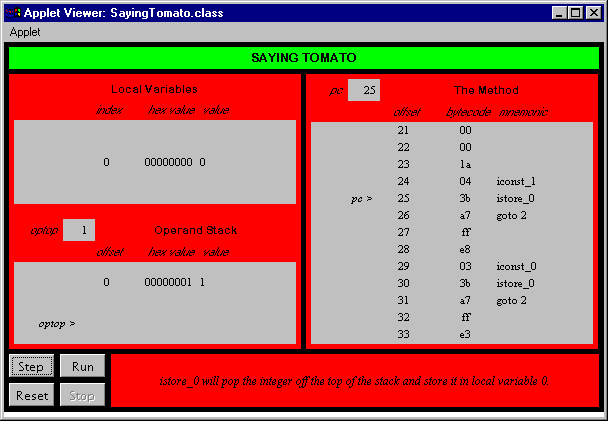

Any use of this Beta Book is subject to the rules stated in the Terms of Use.
| © 1997 The McGraw-Hill Companies, Inc. All rights reserved. Any use of this Beta Book is subject to the rules stated in the Terms of Use. | |
This chapter describes the instructions that cause the Java Virtual Machine to conditionally or unconditionally branch to a different location within the same method. This includes the instructions that implement the if, if-else, while, do-while, for, and switch statements of Java source code.
Accompanying this chapter on the CD-ROM is an applet that interactively illustrates the material presented in the chapter. The applet, named Saying Tomato, simulates the Java Virtual Machine executing a method that includes bytecodes that perform table jumps (the compiled version of a switch statement in Java source code). At the end of this chapter, you will find a description of this applet and the bytecodes it executes.
Conditional Branching
In Java source code, you specify basic control-flow within a method with if, if-else, while, do-while, for, and switch statements. With the exception of switch, Java compilers draw from the same set of opcodes when translating all of these source code constructs to bytecodes. For example, the simplest control-flow construct Java offers is the if statement. When a Java program is compiled, the if statement may be translated to any one of a variety of opcodes, depending upon the nature of the ifís expression. Each opcode either pops one or two values from the top of the stack and does a comparison. The opcodes that pop only one value compare that value with zero. The opcodes that pop two values compare one with the other. If the comparison succeeds (success is defined differently by each individual opcode), the Java Virtual Machine branches--or jumps--to the offset given as an operand to the comparison opcode.
For each of the conditional branch opcodes, the Java Virtual Machine follows the same procedure to determine the next instruction to execute. The virtual machine first performs the comparison specified by the opcode. If the comparison fails, the virtual machine continues execution with the instruction that immediately follows the conditional branch instruction. If the comparison succeeds, the virtual machine forms a signed 16-bit offset from two operand bytes that trail the opcode. It adds the offset to the contents of the current pc register (the address of the conditional branch opcode) to get the target address. The target address must point to an opcode of an instruction in the same method. Execution continues as the target address.
One family of if opcodes, shown in Table 16-1, performs integer comparisons against zero. When the Java Virtual Machine encounters one of these opcodes, it pops one int off the stack and compares it with zero.
Table 16-1. Conditional branch: integer comparison with zero
| Opcode | Operand(s) | Description |
| ifeq | branchbyte1, branchbyte2 | pop int value, if value == 0, branch to offset |
| ifne | branchbyte1, branchbyte2 | pop int value, if value != 0, branch to offset |
| iflt | branchbyte1, branchbyte2 | pop int value, if value < 0, branch to offset |
| ifle | branchbyte1, branchbyte2 | pop int value, if value <= 0, branch to offset |
| ifgt | branchbyte1, branchbyte2 | pop int value, if value 0, branch to offset |
| ifge | branchbyte1, branchbyte2 | pop int value, if value = 0, branch to offset |
Another family of if opcodes, shown in Table 16-2, pops two integers off the top of the stack and compares them against one another. The virtual machine branches if the comparison succeeds. Just before these opcodes are executed, value2 is on the top of the stack; value1 is just beneath value2.
Table 16-2. Conditional branch: comparison of two integers
| Opcode | Operand(s) | Description |
| if_icmpeq | branchbyte1, branchbyte2 | pop int value2 and value1, if value1 == value2, branch to offset |
| if_icmpne | branchbyte1, branchbyte2 | pop int value2 and value1, if value1 != value2, branch to offset |
| if_icmplt | branchbyte1, branchbyte2 | pop int value2 and value1, if value1 < value2, branch to offset |
| if_icmple | branchbyte1, branchbyte2 | pop int value2 and value1, if value1 <= value2, branch to offset |
| if_icmpgt | branchbyte1, branchbyte2 | pop int value2 and value1, if value1 value2, branch to offset |
| if_icmpge | branchbyte1, branchbyte2 | pop int value2 and value1, if value1 = value2, branch to offset |
The opcodes shown above in Table 16-2 operate on ints. These opcodes also are used for comparisons of types short, byte, and char; the Java Virtual Machine always manipulates types smaller than int by first converting them to ints and then manipulating the ints.
A third family of opcodes, shown in Table 16-3, takes care of comparisons of the other primitive types: long, float, and double. These opcodes don't cause a branch by themselves. Instead, they push the int value that represents the result of the comparison--0 for equal to, 1 for greater than, and -1 for less than--and then use one of the int compare opcodes introduced above to force the actual branch.
Table 16-3. Comparison of longs, floats, and doubles
| Opcode | Operand(s) | Description |
| lcmp | (none) | pop long value2 and value1, compare, push int result |
| fcmpg | (none) | pop float value2 and value1, compare, push int result |
| fcmpl | (none) | pop float value2 and value1, compare, push int result |
| dcmpg | (none) | pop double value2 and value1, compare, push int result |
| dcmpl | (none) | pop double value2 and value1, compare, push int result |
The two opcodes for float comparisons (fcmpg and fcmpl) differ only in how they handle NaN ("not a number"). In the Java Virtual Machine, comparisons of floating-point numbers always fail if one of the values being compared is NaN. If neither value being compared is NaN, both fcmpg and fcmpl instructions push a 0 if the values are equal, a 1 if value1 is greater than value2, and a -1 if value1 is less than value2. But if one or both of the values is NaN, the fcmpg instruction pushes a 1, whereas the fcmpl instruction pushes a -1. Because both of these operands are available, any comparison between two float values can push the same result onto the stack independent of whether the comparison failed because of a NaN. This is also true for the two opcodes that compare double values: dcmpg and dcmpl.
A fourth family of if opcodes, shown in Table 16-4, pops one object reference off the top of the stack and compares it with null. If the comparison succeeds, the Java Virtual Machine branches.
Table 16-4. Conditional branch: object reference comparison with null
| Opcode | Operand(s) | Description |
| ifnull | branchbyte1, branchbyte2 | pop reference value, if value == null, branches to offset |
| ifnonnull | branchbyte1, branchbyte2 | pop reference value, if value != null, branches to offset |
The last family of if opcodes, which is shown in Table 16-5, pops two object references off the stack and compares them with each other. In this case, there are only two comparisons that make sense: "equals" and "not equals." If the references are equal, then they refer to the exact same object on the heap. If not, they refer to two different objects. As with all the other if opcodes, if the comparison succeeds, the Java Virtual Machine branches.
Table 16-5. Conditional branch: comparison of two object references
| Opcode | Operand(s) | Description |
| if_acmpeq | branchbyte1, branchbyte2 | pop reference value2 and value1, if value1 == value2, branch to offset |
| if_acmpne | branchbyte1, branchbyte2 | pop reference value2 and value1, if value1 != value2, branch to offset |
Unconditional Branching
Thatís all of the opcodes that cause the Java Virtual Machine to branch conditionally. One other family of opcodes, however, causes the virtual machine to branch unconditionally. Not surprisingly, these opcodes, shown in Table 16-6, are called "goto." To execute a goto instruction, the virtual machine forms a signed 16-bit offset from two operand bytes that follow the goto opcode. (To execute a goto_w instruction, the virtual machine forms a signed 32-bit offset from four operand bytes that follow the goto_w opcode.) The virtual machine adds this offset to the current contents of the pc register. The resulting address must contain an opcode of an instruction in the current method. The virtual machine continues execution at this instruction.
Table 16-6. Unconditional branch
| Opcode | Operand(s) | Description |
| goto | branchbyte1, branchbyte2 | branch to offset |
| goto_w | branchbyte1, branchbyte2, branchbyte3, branchbyte4 | branch to offset |
The opcodes shown in Tables 16-1 through 16-6 are sufficient to express in bytecodes the any control flow specified in Java source code with an if, if-else, while, do-while, or for statement. The above opcodes also could be used to express a switch statement, but the Java Virtual Machine's instruction set includes two opcodes specially designed for the switch statement: tableswitch and lookupswitch.
Conditional Branching with Tables
The tableswitch and lookupswitch instructions, shown in Table 16-7, both include one default branch offset and a variable-length set of case value/branch offset pairs. Both instructions pop the key (the value of the expression in the parentheses immediately following the switch keyword) from the stack. The key is compared with all the case values. If a match is found, the branch offset associated with the case value is taken. If no match is found, the default branch offset is taken.
The difference between tableswitch and lookupswitch is in how they indicate the case values. The lookupswitch instruction is more general-purpose than tableswitch, but tableswitch is usually more efficient. Both instructions are followed by zero to three bytes of padding--enough so that the byte immediately following the padding starts at an address that is a multiple of four bytes from the beginning of the method. (These two instructions, by the way, are the only ones in the entire Java Virtual Machine instruction set that involve alignment on a greater than one-byte boundary.) For both instructions, the next four bytes after the padding is the default branch offset.
After the zero- to three-byte padding and the four-byte default branch offset, the lookupswitch opcode is followed by a four-byte value, npairs, which indicates the number of case value/branch offset pairs that will follow. The case value is an int, which highlights the fact that switch statements in Java require a key expression that is an int, short, char, or byte. If you attempt to use a long, float, or double as a switch key, your program won't compile. The branch offset associated with each case value is another four-byte offset. The value/branch offset pairs must appear in increasing numerical order of case value.
In the tableswitch instruction, the zero- to three-byte padding and the four-byte default branch offset are followed by low and high int values. The low and high values indicate the endpoints of a range of case values included in this tableswitch instruction. Following the low and high values are high - low + 1 branch offsets--one branch offset for high, one for low, and one for each integer case value in between high and low. The branch offset for low immediately follows the high value.
Thus, when the Java Virtual Machine encounters a lookupswitch instruction, it must check the key against each case value until it finds a match, encounters a case value greater than the key (the values/branch offset pairs are sorted in increasing numerical order of case value), or runs out of case values. If it doesnít find a match, it uses the default branch offset. On the other hand, when the Java Virtual Machine encounters a tableswitch instruction, it can simply check to see if the key is within the range defined by low and high. If not, it takes the default branch offset. If so, it just subtracts low from key to get an offset into the list of branch offsets. This way, it can determine the appropriate branch offset without having to check each case value.
Table 16-7. Table jumping
| Opcode | Operand(s) | Description |
| lookupswitch | <0-3 byte paddefaultbyte1, defaultbyte2, defaultbyte3, defaultbyte4, npairs1, npairs2, pairs3, npairs4, case value/branch offset pairs... | pop key, match key with case values, if match found jump to associated branch offset, else jump to default branch offset |
| tableswitch | <0-3 byte paddefaultbyte1, defaultbyte2, defaultbyte3, defaultbyte4, lowbyte1, lowbyte2, lowbyte3, lowbyte4, highbyte1, highbyte2, highbyte3, highbyte4, branch offsets... | pop key, if not in low/high range jump to default branch offset, else get the (key - low) branch offset and jump |
Other than the opcodes described above, the only Java Virtual Machine instructions that affect control flow are those that deal with throwing and catching exceptions, finally clauses, and invoking and returning from methods. These opcodes are discussed in later chapters.
Saying Tomato: A Simulation
The Saying Tomato applet, shown in Figure 16-1, demonstrates a Java Virtual Machine executing a sequence of bytecodes. The applet is part of a web page on the CD-ROM in file applets/SayingTomato.html. The bytecode sequence in the simulation was generated by the javac compiler for the argue() method of the class shown below:
begin
// On CD-ROM in file opcodes/ex1/Struggle.javaclass Struggle {
public final static int TOMAYTO = 0;
public final static int TOMAHTO = 1;
static void argue() {
int say = TOMAYTO;
for (;;) {
switch (say) {
case TOMAYTO:
say = TOMAHTO;
break;
case TOMAHTO:
say = TOMAYTO;
break;
}
}
}
}
end
The bytecodes generated by javac for the argue() method are shown below:
begin
0 iconst_0 // Push constant 0 (TOMAYTO)1 istore_0 // Pop into local var 0: int say = TOMAYTO;
2 iload_0 // Push key for switch from local var 0
// Perform switch statement: switch (say) {...
// Low case value is 0, high case value is 1
// Default branch offset will goto 2
3 tableswitch 0 to 1: default=2
0: 24 // case 0 (TOMAYTO): goto 24
1: 29 // case 1 (TOMAHTO): goto 29
// Note that the next instruction starts at address
// 24, which means the tableswitch took up 21 bytes
24 iconst_1 // Push constant 1 (TOMAHTO)
25 istore_0 // Pop into local var 0: say = TOMAHTO
26 goto 2 // Branch unconditionally to 2, top of while loop
29 iconst_0 // Push constant 1 (TOMAYTO)
30 istore_0 // Pop into local var 0: say = TOMAYTO
31 goto 2 // Branch unconditionally to 2, top of while loop
end
The argue() method merely switches the value of say back and forth between TOMAYTO and TOMAHTO. Because the values of TOMAYTO and TOMAHTO were consecutive (TOMAYTO was a 0 and TOMAHTO was a 1), the javac compiler used a tableswitch. The tableswitch is a more efficient instruction than a lookupswitch, and the equivalent lookupswitch instruction would occupy 28 bytes--4 bytes more than tableswitch.
It turns out that even if TOMAYTO were a 0 and TOMAHTO were a 2, the javac compiler still would have used a tableswitch, because even with the extra default branch offset in there for a 1, the tableswitch instruction would occupy only 28 bytes--the same number of bytes as the equivalent lookupswitch. Both instructions occupy the same number of bytes, but tableswitch is more efficient, so it is used. As soon as you make TOMAHTO a 3, however, javac starts using a lookupswitch. This is because a tableswitch would now need two default branch offsets in its list (for 1 and 2), which would push its size up to 32 bytes. Thus, a lookupswitch now would require fewer bytes than a tableswitch--so javac chooses the lookupswitch.
The branch offsets for the case values cause the Java Virtual Machine to hop down to code that will change the value of the say local variable. The value of say will alternate between TOMAYTO and TOMAHTO indefinitely, until the user aborts the program, thereby calling the whole thing off.
To drive the Saying Tomato simulation, use the Step, Reset, Run, and Stop buttons. Each time you press the Step button, the simulator will execute the instruction pointed to by the pc register. If you press the Run button, the simulation will continue with no further coaxing on your part until you press the Stop button. To start the simulation over, press the Reset button. For each step of the simulation, a panel at the bottom of the applet contains an explanation of what the next instruction will do. Happy clicking.

On the CD-ROM
The CD-ROM contains the source code examples from this chapter in the opcodes directory. The Saying Tomato applet is contained in a web page on the CD-ROM in file applets/SayingTomato.html. The source code for this applet is found alongside its class files, in the applets/JVMSimulators and applets/JVMSimulators/COM/artima/jvmsim directories.
The Resources Page
For more information about the material presented in this chapter, visit the resources page: http://www.artima.com/insidejvm/flow.html.
COMPUTING MCGRAW-HILL | Beta Books | Contact Us | Order Information | Online Catalog
Computing McGraw-Hill is an imprint of the McGraw-Hill Professional Book Group.